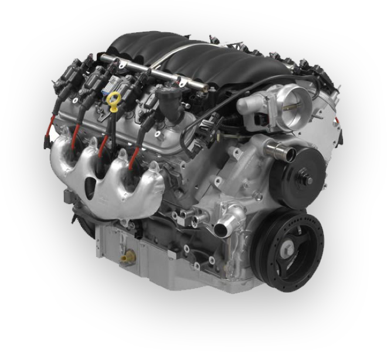
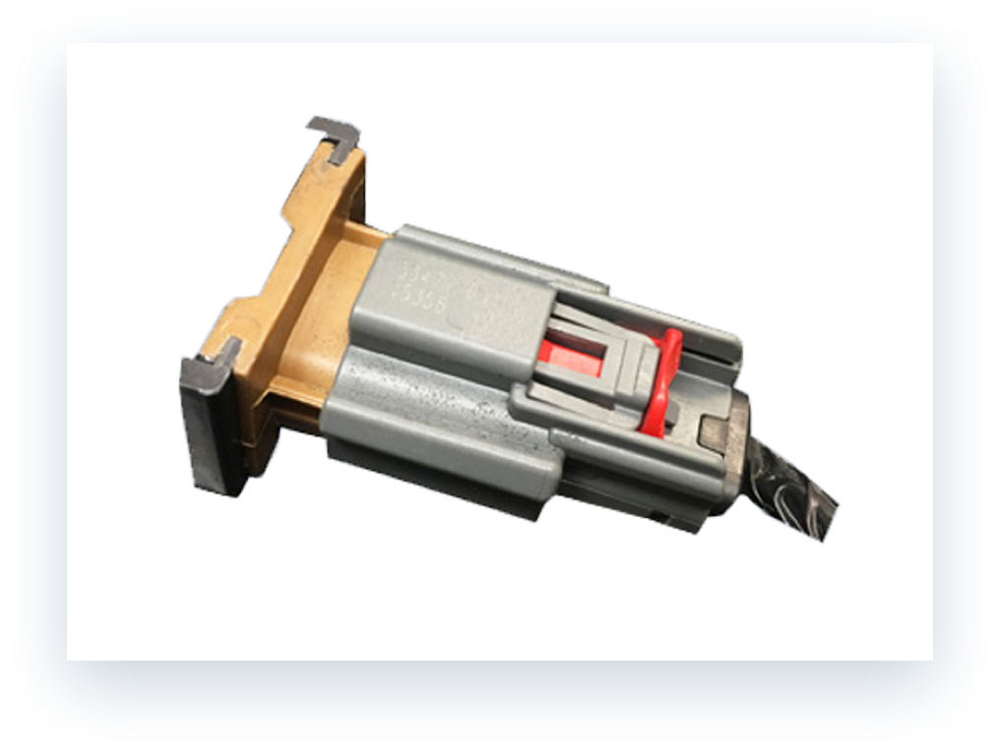
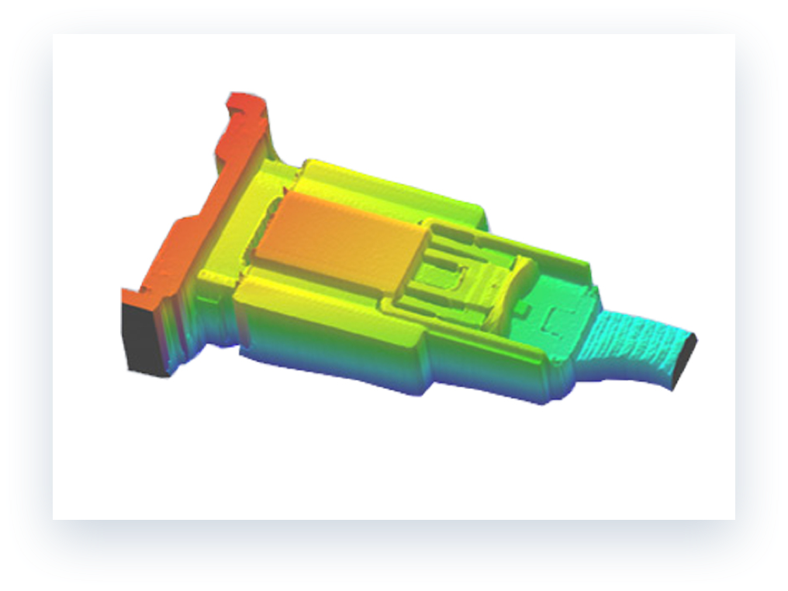
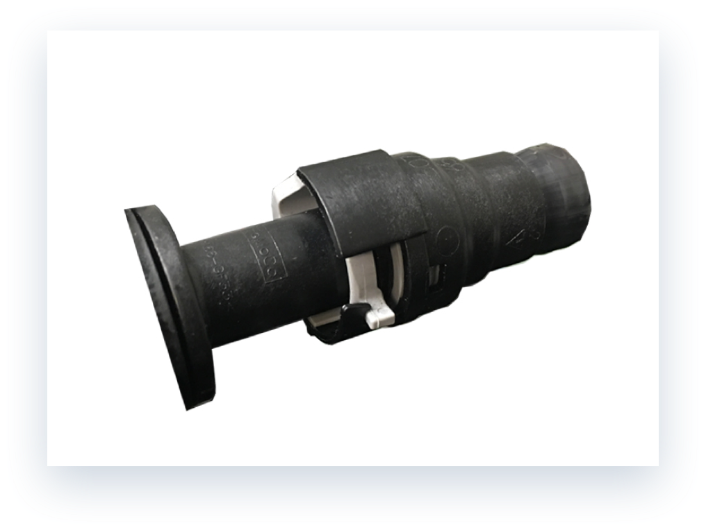
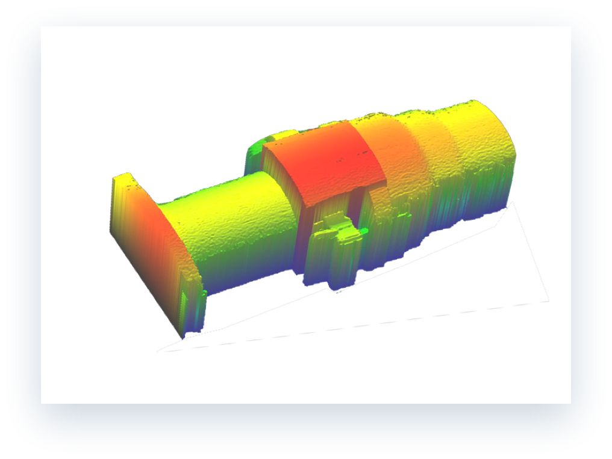

Flexible End-of-Line
Inspection
Inspection


Robust3D End-of-Line Inspection solution verifies the proper installation of components at the final engine
assembly line to ensure proper performance of the engine.
A lot of components such as electrical connectors, tensioner, coolant line, tube clippers, are installed at the end of engine final assembly line. Proper installation of these components are critical to proper performance of the engine. Most of these components are manually assembled and most assembly lines today run multiple variants on the same line. As a result, final assembly errors are common. With so many inspection points and such a wide range of inspection criteria, it is common to see 2D vision systems which are bulky, over-complex, and notoriously unreliable. The flexibility and robustness of Coherix Robust3D, make itself a reliable solution to end-of-line inspection.
A lot of components such as electrical connectors, tensioner, coolant line, tube clippers, are installed at the end of engine final assembly line. Proper installation of these components are critical to proper performance of the engine. Most of these components are manually assembled and most assembly lines today run multiple variants on the same line. As a result, final assembly errors are common. With so many inspection points and such a wide range of inspection criteria, it is common to see 2D vision systems which are bulky, over-complex, and notoriously unreliable. The flexibility and robustness of Coherix Robust3D, make itself a reliable solution to end-of-line inspection.

3D Inspection Examples
Electrical Connectors


PCVs

